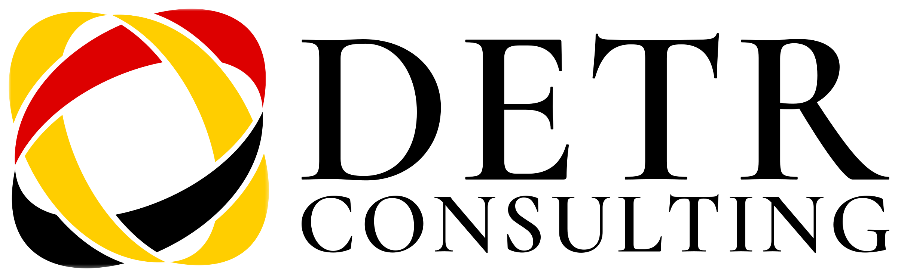

Connecting minds,
bridging markets.
Who we are
DETR Consulting is the ecosystem’s cross-border front-end — the Berlin-based, Germany-facing gateway for foreign investors evaluating and structuring their entry into the Turkish market. Focused by design, built around one high-value journey.
The market-entry conversion layer — not a second CPA International Turkey. DETR owns the cross-border decision: market entry, company formation for foreign investors, Germany–Türkiye structuring. It deliberately does not reproduce CPA International Turkey’s full operational catalogue. Once a client is on the ground, DETR hands the operational tax, audit and accounting work to CPA International Turkey.
Connecting Minds,
Bridging Markets.
English is the primary line; German is the second native language. Both spoken fluently, never mixed mid-page.
One journey, done well.
A bridge between two markets.
Bilingual, bicultural, fluent.
German precision, applied.
The logo
An interlocking orbit in the three colours of the German flag — black, red and gold — meets a classical serif wordmark. The orbit is the bridge: two arcs crossing, two markets meeting.

Horizontal lockup — the default. Icon left, serif wordmark right.
For avatars, favicons and app icons. The orbit reads at small sizes where the wordmark can’t.
On black or ink, the wordmark and black arcs knock out to white; gold and red stay.
White and warm paper are preferred. On black or red, use the reversed lockup.
Clear space & sizing
The orbit needs air. Clear space and minimum sizes keep both the icon and the serif wordmark legible.
Keep a margin equal to the icon’s height (X) on all sides.
150px wide34mm wide26px8mmThe serif wordmark has fine strokes — never reproduce the full lockup smaller than the minimums.
Logo misuse
Never alter the flag colours, the orbit or the serif wordmark. All of the following are prohibited.
Don’t recolour the orbit — the flag palette is fixed.
Don’t stretch or distort the lockup.
Don’t put the black wordmark on a dark ground — use reversed.
Don’t rotate the icon away from its set angle.
Don’t place on clashing colour fields.
Don’t reset the wordmark in a sans or any other face.
Colour
The palette is the German flag — black, red and gold — the most direct possible signal of who DETR serves and where it stands. DETR’s colour is its own and is never blended with CPA International Turkey’s navy.
The neutral spine is the only colour DETR shares with CPA International Turkey — the quiet thread of kinship.
Black and paper are the base. Red is the accent that carries energy; gold is used sparingly — a fine line, an arc, a highlight — never large flat fields, and never beside CPA International Turkey navy.
Black/paper ~85% · red ~10% · gold ~5%.
Typography
DETR is serif-led. Spectral sets headlines and pull-quotes — classical and editorial, echoing the wordmark. Archivo handles labels, UI and data.
two markets.
präzise.
Graphic language
Two devices extend the logo: the bridging arc drawn from the orbit, and the tricolor edge — a thin black-red-gold band that signs any DETR artefact.
An arc spanning two points — Germany and Türkiye. Use as a header rule or section divider.
A thin black-red-gold band along one edge of covers, cards and slides.
Photography
Photography is bright, human and connective: people in conversation, two cities meeting, bridges and gateways. Warmer and more candid than CPA International Turkey’s architectural restraint.
Natural light, genuine moments, a sense of two places connecting.
No isolated stock handshakes, flag clichés or harsh corporate grey.
Voice & tone
We sound like a trusted bridge: warm, fluent and reassuring. We make a foreign market feel familiar — and we describe Türkiye accurately, never with borrowed terminology from other jurisdictions.
We meet clients where they are and remove the fear of the unfamiliar.
Bilingual and bicultural. We explain each side to the other, plainly.
Turkey-specific facts and process. Warm in tone, exact in substance.
- “We’ll handle the Turkish side, so you can plan with confidence from Germany.”
- “New to the market? Here’s exactly what your first 90 days in Türkiye look like.”
- “Two cultures, one clear plan.”
- US/other-jurisdiction terms — “EIN,” “Articles of Incorporation,” “Bylaws,” “state permits.”
- Cold, bureaucratic officialese.
- Over-promising, or copying CPA International Turkey’s deep operational pitch.
Company-formation content must use Turkish concepts — e.g. Limited Şirket (Ltd. Şti.) / Anonim Şirket (A.Ş.), trade-registry (Ticaret Sicili) registration, tax-office & SSI enrolment — never US incorporation language
Trust & proof
Cross-border advisory is a trust-heavy purchase. Because DETR is the conversion-facing brand, every page must earn confidence with concrete proof — not generic claims.
One line of credentials and cross-border specialism. Languages: Deutsch · English · Türkçe. Identical wording on site, LinkedIn and bylines.
Applications
The system in practice — warm, editorial and unmistakably DETR. The serif voice leads, the tricolour does the signalling and the bridge is never far. Once a client is on the ground, materials cross-reference CPA International Turkey.
Front — paper, tricolour spine, serif lockup. 85 × 55 mm.
Back — ink ground, orbit icon, the tagline and the CPA International Turkey cross-reference.
A4 letterhead — tricolour edge, German correspondence, network footer.
+49 30 0000 0000 · detrconsulting.com
Email signature — serif lockup, red keyline, the tagline as sign-off.
Website hero — ink header, tricolour edge, the bridge motif, serif headline.
Presentation title — 16:9 ink, tricolour, serif headline, reversed lockup.
Delphi Alliance
Report cover — image band over an ink title block; photography drops into the slot.
Social kit — bridge banner, orbit avatar, and a post template.
Boilerplate & entity
One name, one description, everywhere. Consistent entity data across every website, directory and profile builds the recognisable, trustworthy brand DETR needs as the conversion front-end.
Use verbatim in site footers, LinkedIn, directories and partner listings.